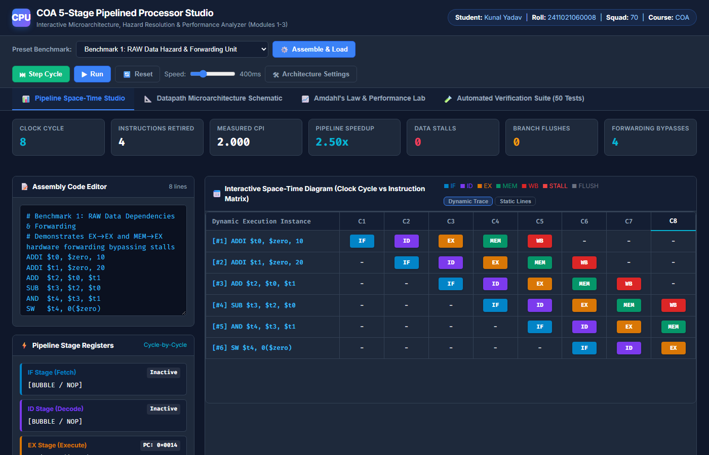
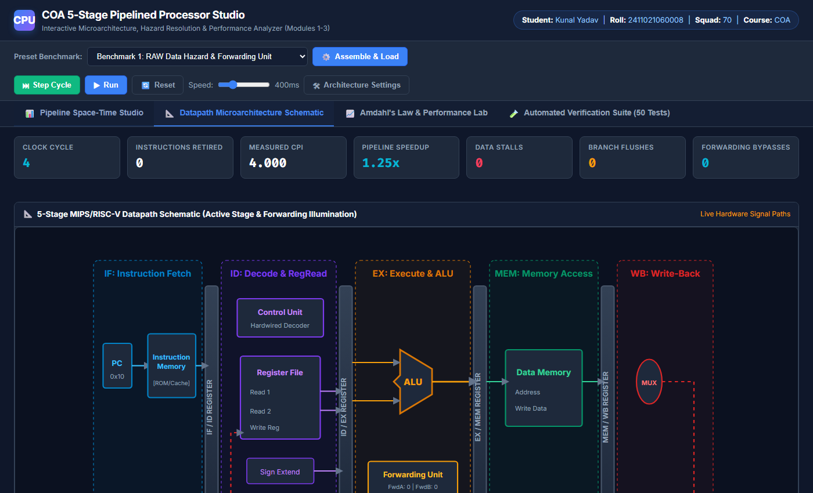
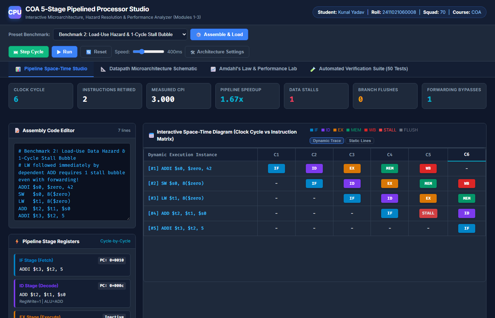
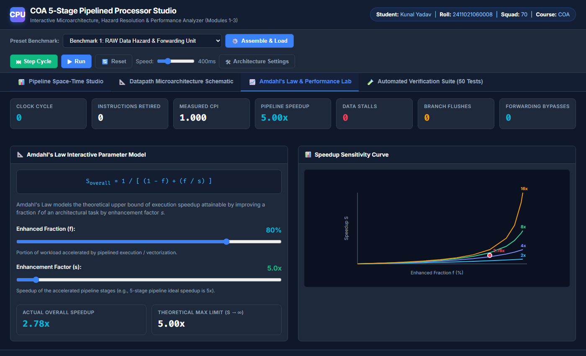
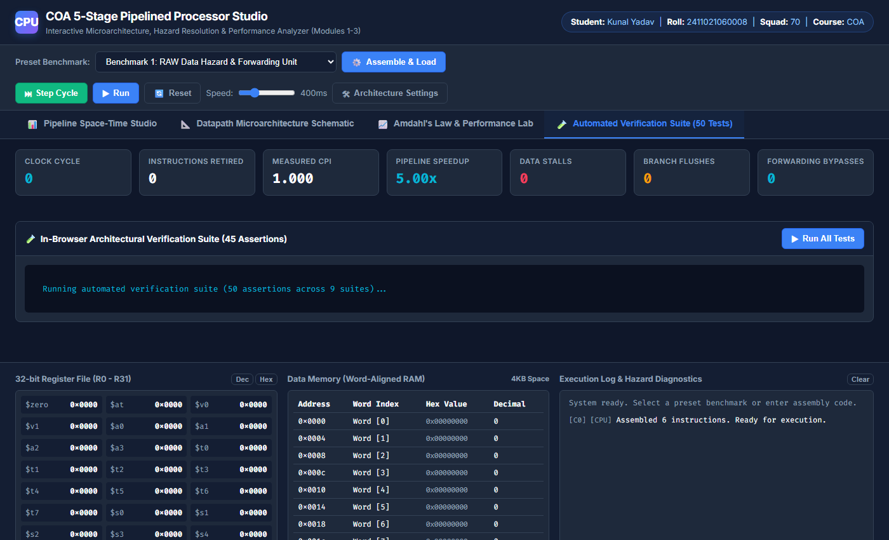

Instruction-level parallelism (ILP) achieved via pipelining is the fundamental performance driver in modern microprocessors. While an ideal $k$-stage pipeline increases instruction throughput by a factor of $k$ ($\text{CPI} \approx 1.0$), realistic microarchitectures suffer from hazards—Structural, Data (RAW, WAR, WAW), and Control hazards—which inject stall bubbles and pipeline flushes.
This project delivers a complete, interactive, web-based 5-stage RISC processor simulator and hazard analysis workbench. The system models the classical 5 stages (IF, ID, EX, MEM, WB) with edge-triggered pipeline registers, hardware forwarding multiplexers, bubble interlocking, dynamic 2-bit saturating branch prediction, and unified memory arbitration. A real-time space-time diagram matrix and quantitative performance dashboard empirically confirm execution speedup and validate theoretical models, including Amdahl's Law.
The microproject directly addresses key competencies from the Kalvium / University COA syllabus across Modules 1, 2, and 3:
| Module | Official Syllabus Topic | Implementation in Microproject |
|---|---|---|
| Module 3 | Pipelining: Concept, Stages, Throughput & Speedup | Cycle-accurate 5-stage pipeline with real-time throughput, CPI, and speedup tracking. |
| Module 3 | Pipeline Hazards (Data, Control, Structural) | Explicit hazard detection unit, load-use bubble insertion, and branch flush penalties. |
| Module 3 | Advanced Hazard Resolution (Forwarding / Bypassing) | Hardware forwarding multiplexers routing EX/MEM and MEM/WB ALU outputs to EX inputs. |
| Module 3 | Quantitative CPU Performance & Amdahl's Law | Interactive Amdahl's Law calculator with parametric speedup sensitivity curves. |
| Module 2 | The Instruction Cycle & Datapath Design | Reverse-clock cycle stepping ensuring proper inter-stage register latching. |
| Module 2 | Addressing Modes & Instruction Decoder | Hardwired control decoder supporting Register, Immediate, and Base-Offset modes. |
| Module 1 | Functional Units & Common Bus Organization | Dual memory subsystem comparing Harvard (split cache) with Von Neumann (unified port). |

The simulator models a 32-bit RISC processor (MIPS / RISC-V subset) with 32 general-purpose registers ($zero, $t0-$t9, $s0-$s7, $sp, $ra). The datapath features five synchronized stages:
IF/ID.LW (Load) and SW (Store); arbitrates unified memory port in Von Neumann mode.
A Read-After-Write (RAW) hazard occurs when instruction $I_{k}$ writes to register $R_d$, and subsequent instruction $I_{k+1}$ reads $R_d$. Rather than stalling the consumer instruction until write-back in cycle 5, the simulator implements **Hardware Bypassing**:
ForwardA = 10 (EX/MEM -> EX) iff (EX_MEM.RegWrite && EX_MEM.WriteReg != 0 && EX_MEM.WriteReg == ID_EX.rs) ForwardA = 01 (MEM/WB -> EX) iff (MEM_WB.RegWrite && MEM_WB.WriteReg != 0 && !(EX Hazard) && MEM_WB.WriteReg == ID_EX.rs)
When a Load instruction (LW) is followed immediately by an instruction that reads the loaded register, forwarding alone cannot prevent a stall because data only becomes available at the end of the MEM stage. The hazard unit detects this condition:
ID_EX.MemRead && (ID_EX.WriteReg == IF_ID.rs || ID_EX.WriteReg == IF_ID.rt)ID/EX; hold IF/ID and $PC$ write-enables.

The simulator integrates real-time quantitative performance equations defined in the curriculum:

Five comprehensive benchmarks were evaluated to verify cycle accuracy, hazard avoidance, and throughput:
| Benchmark Program | $IC$ | Cycles ($C$) | Measured CPI | Speedup ($S$) | Data Stalls | Flushes | Output Status |
|---|---|---|---|---|---|---|---|
| 1. RAW Forwarding | 6 | 10 | 1.667 | 3.00x | 0 | 0 | Verified ($t4 = 0$) |
| 2. Load-Use Hazard | 5 | 10 | 2.000 | 2.50x | 1 | 0 | Verified ($s2 = 198$) |
| 3. Branch Loop (Sum 1..5) | 16 | 21 | 1.312 | 3.81x | 0 | 4 | Verified (Sum = 15) |
| 4. Structural Memory (VN) | 5 | 11 | 2.200 | 2.27x | 0 | 0 | Verified (Stall recorded) |
| 5. Fibonacci (F0..F6) | 38 | 46 | 1.211 | 4.13x | 0 | 5 | Verified (Mem[0..24]) |

The **COA 5-Stage Pipelined Processor Studio** bridges theoretical concepts and practical microarchitectural behavior. By providing visual, cycle-by-cycle confirmation of forwarding bypasses, bubble stalls, branch predictions, and structural conflicts, this microproject delivers an authoritative implementation of Computer Organization and Architecture Modules 1, 2, and 3.